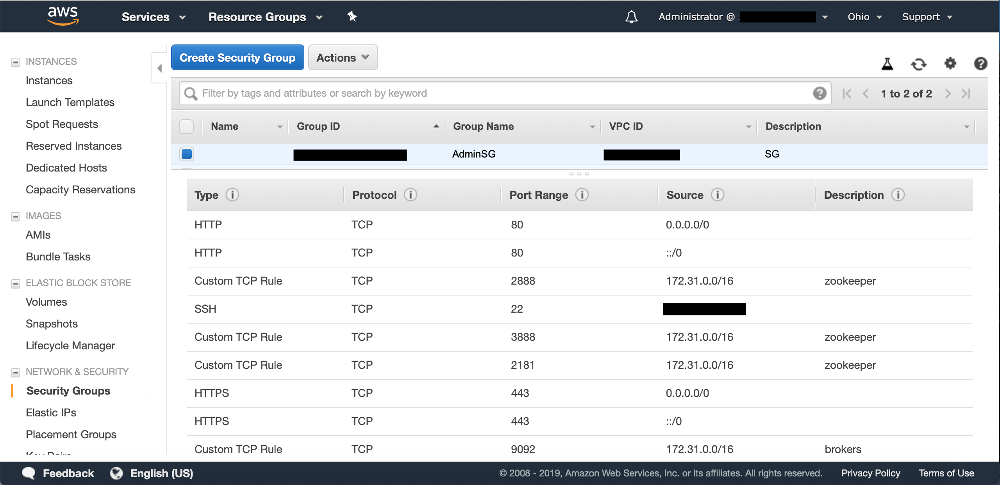
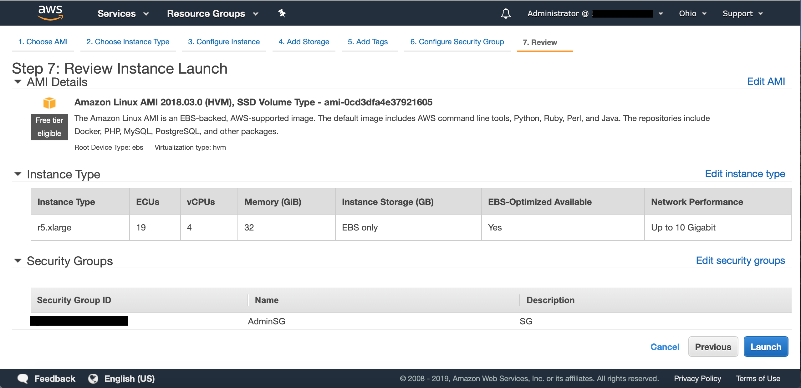
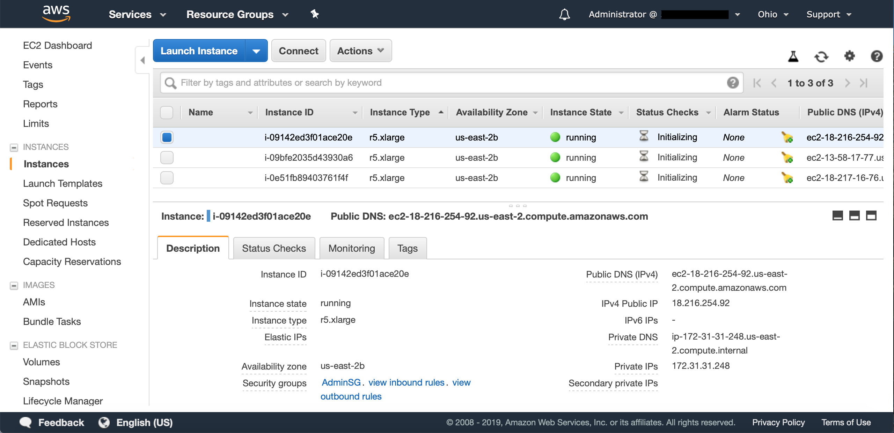

Setting up Kafka on Amazon Web Services (AWS)
Author: Stuart Eudaly
Date: January 2nd, 2019
Setting up Kafka on remote hardware can be difficult. Especially if you’re not very familiar with the cloud service’s options for configurations. This blog post aims to give the reader an introduction to setting up Kafka on AWS and some of the intricacies involved in that process.
 When writing this article, I made the assumption that the reader has little to no experience using AWS or setting up Kafka. Based on that assumption, I will be starting from the very beginning with the creation of an AWS account. From there, we will configure instances and related settings, launch and connect to the instances, then install and configure Kafka on each instance. The entire process is not overly difficult, but can be a little confusing if you have no experience. Let’s get to it!
When writing this article, I made the assumption that the reader has little to no experience using AWS or setting up Kafka. Based on that assumption, I will be starting from the very beginning with the creation of an AWS account. From there, we will configure instances and related settings, launch and connect to the instances, then install and configure Kafka on each instance. The entire process is not overly difficult, but can be a little confusing if you have no experience. Let’s get to it!
Setting Up an AWS Account
In order to do anything with AWS, they require the user to set up an AWS account and provide a credit card for billing purposes. I followed the steps in AWS’s own documentation, but will go over the basics below. I highly recommend following this guide.
- Create an AWS account here.
- Create an IAM user (a user with administrative privileges in this case) here.
- Create and download a key pair so that you can SSH to your instance.
- Create a Virtual Private Cloud (VPC), if you’d prefer not to use the default (I used the default VPC).
- Create a Security Group to manage incoming connections to your instance (SSH from your current IP).
If you’ve followed AWS’s documentation, those five steps are fairly straightforward. The only additional work needed is to configure your security group to allow TCP connections between instances. For this post, I set up Kafka and Zookeeper on the same instances. This means that each instance needs to be able to communicate on the following ports:
- 2181 - Zookeeper client connections
- 2888 - Zookeeper follower connections
- 3888 - Zookeeper inter-node connections
- 9092 - Kafka connections
To open these ports, start by opening the EC2 console here. In the left-hand pane, choose “Security Groups” under “Network & Security.” Here, you’ll find the security group you made earlier to SSH to your instances. Select that security group, click the Actions button, then choose “Edit inbound rules.”
AWS’s internal networking (at least for the instances and region I was using) uses 172.31.X.X for IP addresses. To allow each instance to connect to the others, set up four rules for inbound connections using TCP as the protocol and 172.31.0.0./16 as the source (or a different source if your instances have different internal IP addresses). Each rule should have one of the four ports mentioned above. When finished, your security group should look something like this:

Now that we have all of our account settings configured, let’s set up some instances.
Setting Up Instances
AWS provides many cloud-based services. We’re interested in AWS’s scalable cloud computing service called “Elastic Cloud Compute” or EC2. For more information, check out these links:
Based on Confluent’s recommendations for AWS, I chose to set up three r5.xlarge instances for Kafka and Zookeeper. These instances each feature 4 vCPUs, 32GiB of RAM, and 10Gbps networking. To configure and launch these instances, start on the EC2 dashboard. In the left-hand pane, choose “Instances” under the “Instances” heading. Click the Launch Instance button and follow the steps. There are seven steps total:
- Choose an Amazon Machine Image (AMI) - I choose the standard Amazon Linux AMI.
- Choose an Instance Type - As stated earlier, I went with r5.xlarge.
- Configure Instance Details - I didn’t change anything here except the number of instances.
- Add Storage - Because I was setting these instances up for training purposes, I decided on 200GiB each. I used the General Purpose SSD option. Storage for EC2 is done through Elastic Block Storage (EBS) and costs per GB-month. For more information look here.
- Add Tags - This step is optional, but allows you to “tag” your instances for better management.
- Configure Security Group - Make sure to choose “Select an existing security group” and pick the security group created earlier.
- Review - Review all the details of your instances before launching them. If everything looks good, click the Launch button!

Now that you’ve launched your instances, head back to the “Instances” section of EC2 (if it didn’t redirect you automatically) and take a look at the instances you have running. They can take a minute or two to launch, but once they’re up and running, you can look at the details of each instance. There are two important pieces of information you should take note of:
- Public DNS - This should look something like
ec2-XX-XX-XX-XX.us-east-2.compute.amazonaws.com. - Private IP - As stated earlier, this looks like
172.31.X.X(at least for the region and instances I used).

The Public DNS will be used to SSH to your instances. Be aware: the public DNS changes every time you launch an instance! The private IP won’t be used for any connections we’ll be doing, but you need to ensure that the private IPs for your instances correspond to the security group rules for port connections discussed earlier. If the IPs don’t match your security group rules, your instances will not be able to connect to each other. The good news is that you can change a running instance’s security group if anything was not set up properly. For more info, check out this link.
Now that we have running instances, we’ll use SSH to connect to them. I strongly suggest using this guide if you are unfamiliar with this process. After following those steps, you should connect to your instance from a terminal with the SSH command that will look something like this:
I used three terminal windows for my three running instances. Each instance has its own public DNS (obviously) and the public DNS changes each time you launch that instance, as stated earlier. If you have any issues SSHing to your instances, check out this page. At this point, you should have at least one (three in my case) terminal window open and connected to your instance(s). Now it’s time to install Kafka!
Installing Kafka
For this blog post, I used Confluent’s distribution of Kafka. We’re going to be doing the whole process from the command line, but here is the download page if you’re interested. We’re going to do some terminal commands and modify some configuration files in order to get everything installed and set up. Note: if you have multiple instances to set up, these commands will need to be run on each instance!Start by installing Java 1.8. Amazon AMIs (at least the one I used) come with Java 1.7 and Confluent’s distribution of Kafka requires 1.8. In the instance’s terminal window, run:
then
It’s necessary to install 1.8 THEN remove 1.7 as the aws-apitools will be removed if removing 1.7 first. Next, run:
Feel free to install an updated version if there is one available. 5.0.1-2.11 is the version I used for this tutorial. Once the file is downloaded, unzip it:
You should now have a confluent directory with all the needed files stored within. From here on out, I’ll refer to this as [confluent directory]. At this point, Kafka should be runnable, but we haven’t configured anything yet. Start by setting the Java heap size. By default, the heap size is set to 1GB. In my testing, I tried to set the buffer size (used for storing messages before sending) to 4GB, but the buffer size could not exceed the heap size. In order to make the buffer size bigger, the heap size needed to be set first. I chose to set the heap to 8GB, as all the machines I was working with had well over 8GB of memory and I didn’t plan to set the buffer size any larger than 8GB. For more information, check out this Stack Overflow question.
To set the Java heap size, type this command in terminal:
Now, we need to set some server properties for each broker. The file can be found in [confluent directory]/etc/kafka/server.properties. Open this file with your favorite text editor. I used nano:
Make sure each broker has a unique broker.id. Because I used three instances, I numbered them 0, 1, 2. Once that’s done, head down to the line that says:
#listeners=PLAINTEXT://:9092
Here, we need to set each instance to have its own value as well. Start by uncommenting the line (delete the # symbol) then insert the public DNS for each instance into its own server.properties file. In other words, each instance should have one line for “listeners” and that line should have the public DNS of itself. It should look like something like this:
listeners=PLAINTEXT://ec2-XX-XX-XX-XX.us-east-2.compute.amazonaws.com:9092
The “listeners” need to be set to the external IP (or in this case, public DNS) of each instance so that clients can connect. For a more in-depth explanation, look here. Note: as stated earlier, the public DNS changes for these instances each time you shut them down and relaunch them. If you plan on shutting down and relaunching, EVERY place you entered a public DNS needs to be changed!
It should be noted here that we are NOT going to change the value for zookeeper.connect, as we’re running the broker and Zookeeper on the same instance. If you have a separate instance running Zookeeper, that value needs to be changed.
Next, let’s set the Zookeeper properties found here: [confluent directory]/etc/kafka/zookeeper.properties. Here, we need to specify each of the instances (in my case, three instances) where Zookeeper is running. At the bottom of the file, add a line for each instance you have running. Each line should have a separate address that corresponds to the number of instances you are running. It should look something like this:
server.1=ec2-XX-XX-XX-XX.us-east-2.compute.amazonaws.com:2888:3888
server.2=ec2-XX-XX-XX-XX.us-east-2.compute.amazonaws.com:2888:3888
server.3=ec2-XX-XX-XX-XX.us-east-2.compute.amazonaws.com:2888:3888
...
Take note of what server.number you assign to each instance. This will be important here in just a second. The public DNS should correspond to each instance you are running and 2888 and 3888 are the ports Zookeeper uses to communicate. Note: as stated several times now, the public DNS of each instance changes when shut down and relaunched. Change the values here if you shut down and relaunch your instances!
While zookeeper.properties is still open, add values for tickTime, initLimit, and syncLimit. These settings have to do with heartbeats and timeouts. For more information look here. Apache’s documentations suggests starting with these values:
tickTime=2000
initLimit=5
syncLimit=2
The last configuration to set up before running Kafka is the myid file. Before closing out of zookeeper.properties (or reopen it if you’ve already closed it), take a look at the location of dataDir. By default, this is set to /tmp/zookeeper. We need to head to this directory and create a myid file that corresponds to the server.number we created earlier. To start, head to /tmp and create a “zookeeper” directory (if it’s not already there):
Once that’s done, create the myid file:
Then, open myid on each instance, and type a single number corresponding to the server.number earlier. For example, on the instance designated server.1, open myid and type the number “1” then close the file. On server.2, open myid and type “2” and so on.
Once all of these configurations have been set, we should now be ready to start up Kafka!
Running Kafka
To get Kafka up and running, you must first start Zookeeper on each instance. Navigate to[confluent directory]/bin then look for the executable zookeeper-server-start. This executable takes one argument, which is the location of the zookeeper.properties file. To start Zookeeper, your terminal command should look like this:
When running this command, I would suggest moving the process to the background so you don’t have to open separate terminal windows to run Zookeeper and the Kafka broker. There are two easy ways to send a process to the background so you can continue using your terminal:
- Add “ &” (including the space) to the end of the command.
- If you didn’t add an ampersand, press CTRL-Z once the process is running, then type “bg” and hit enter to send the process to the background.
Now that Zookeeper is running on each instance, it’s time to start the Kafka broker on each instance. The kafka-server-start command will look very similar to the above Zookeeper command, only this time we provide server.properties instead:
Again, add the ampersand to the end of the command, or send it to the background after it starts running. Now that all instances have Zookeeper and the Kafka broker running, let’s verify that everything checks out. One way to do this is to query Zookeeper as to which brokers are currently connected. Because Zookeeper is running on each instance and they all stay up-to-date, you should be able to run the command below on any instance and see the same result. The executable is in the bin directory where you should still be after starting everything.
The “localhost:2181” is the location of Zookeeper. Obviously, if you set up Zookeeper in a separate location, you’ll need to provide that location to the command. The command should spit back all of the currently connected broker IDs from Zookeeper. Mine looked like this:

As long as the results match what you’re expecting, Kafka is up and running! At this point, you can do whatever you’d like with it, but you might want to start by creating a topic. Here’s an example:
Then you can list your topics to make sure it was created. This can be done on any of the Kafka brokers, even one you didn’t create the topic on. Here’s what that looks like:
You might even want to run some perf testing with your setup.
If you’d like to stop Zookeeper and the Kafka brokers, first run kafka-server-stop on all instances, then run zookeeper-server-stop on all instances. Just remember, if you shut down and relaunch your instances, you’ll need to change all of those public DNS entries!